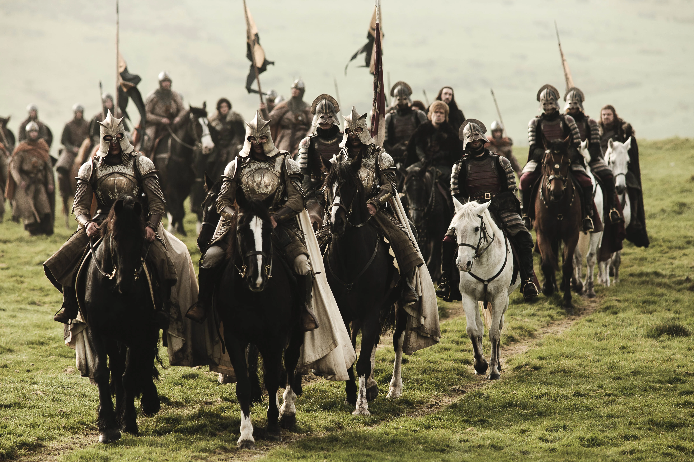

| EP |
Imagem |
Titulo |
Prévia |
| 1 |

|
"Winter Is Coming" |
Um desertor da Patrulha da Noite preocupa Lorde Ned Stark. O Rei
Robert chega a Winterfell e o exilado Viserys Targaryen forja
aliança.
|
| 2 |

|
"The Kingsroad" |
Cersei e Jaime ouvem do irmão que Bran vai sobreviver. Ned deixa
Winterfell com as filhas, enquanto Snow e Tyrion rumam para o
norte.
|
| 3 |
|
"Lord Snow" |
Jon impressiona Tyrion no primeiro dia de treinamento e Ned
cancela evento em sua homenagem, depois de saber da situação do
reino.
|
| 4 |
|
"Cripples, Bastards, and Broken Things" |
Ned busca pistas sobre a morte de Jon Arryn e Tyrion é pego no
lugar errado, na hora errada. Sansa começa a sentir-se como uma
rainha.
|
| 5 |
|
"The Wolf and the Lion" |
Ned recusa uma ordem do rei e Catelyn é recebida com frieza pela
irmã. Arya ouve, por acaso, sobre uma conspiração contra seu
pai.
|
| 6 |
|
"A Golden Crown" |
Ocupando o lugar do Rei, Ned tem que lidar com novos problemas.
Tyrion é julgado por seus crimes e Viserys recebe último
pagamento de Khal Drogo.
|
| 7 |
|
"You Win or You Die" |
Ned pressiona Cersei sobre a morte de Jon Arryn. Jon Snow entra
para a Patrulha da Noite e Daenerys escapa de uma armadilha.
|
| 8 |
|
"The Pointy End" |
Ned é capturado. Robb reúne os aliados para uma guerra e Sansa
implora ao novo Rei pela vida do pai. Tyrion estabelece uma nova
aliança.
|
| 9 |
|
"Baelor" |
Com Sansa em perigo, Ned toma uma importante decisão. Tyrion vai
lutar na linha de frente e Jon descobre um segredo de Aemon.
|
| 10 |
|
"Fire and Blood" |
A notícia sobre Ned chega aos Sete Reinos e Catelyn pressiona
Jaime acerca da queda de Bran. Arya assume uma nova identidade.
|